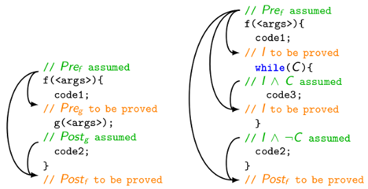
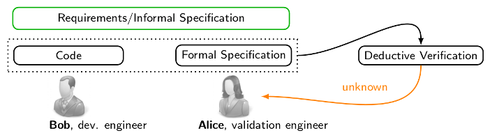
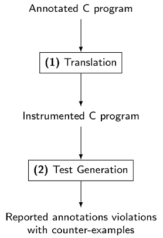
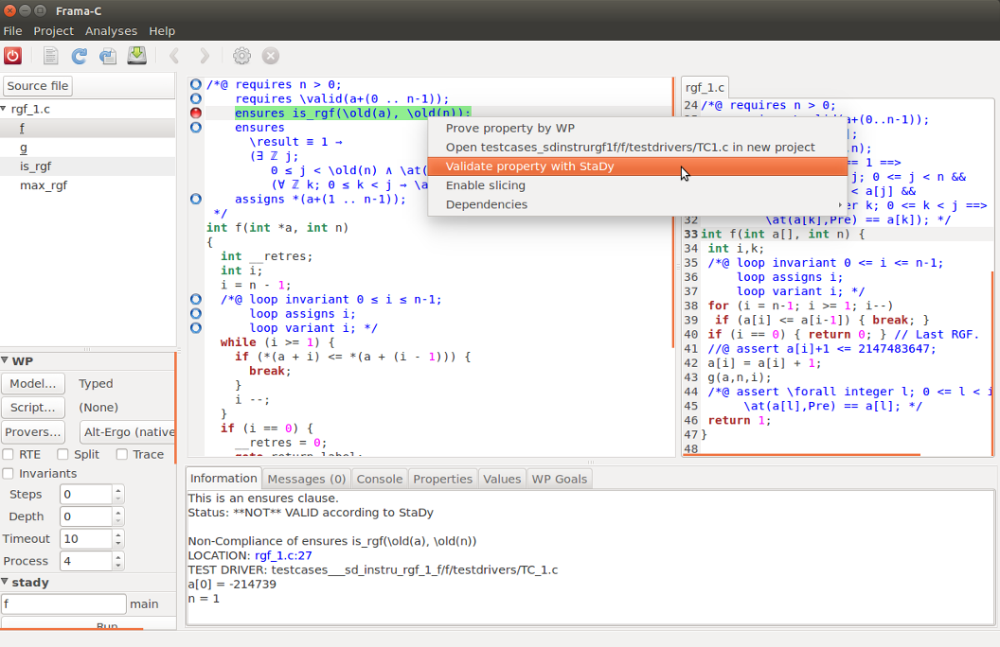

StaDy
StaDy is a Frama-C plug-in using test generation to assist deductive verification.
StaDy is now available on GitHub.
Motivation
Among formal verification techniques, deductive verification consists in establishing a rigorous mathematical proof that a given program meets its specification. When no confusion is possible, one also says that deductive verification consists in "proving a program". It requires that the program comes with a formal specification, usually given in special comments called annotations, including function contracts (with pre- and postconditions) and loop contracts (with loop variants and invariants). The weakest precondition calculus proposed by Dijkstra reduces any deductive verification problem to establishing the validity of first-order formulas called verification conditions.
In modular deductive verification of a function f calling another function g, the roles of the pre- and postconditions of f and of the callee g are dual. The precondition of f is assumed and its postcondition must be proved, while at any call of g in f, the precondition of g must be proved before the call and its postcondition is assumed after the call. The situation for a function f with one call to g is presented in the figure below. An arrow in this figure informally indicates that its initial point provides a hypothesis for a proof of its final point. For instance, the precondition Pref of f and the postcondition Postg of g provide hypotheses for a proof of the postcondition Postf of f. The called function g is proved separately.

One of the most important difficulties in deductive verification is the manual processing of proof failures by the verification engineer since proof failures may have several causes. Indeed, a failure to prove Preg may be due to a non-compliance of the code to the specification: an error in the code code1, or a wrong specification Pref or Preg itself that may incorrectly formalize the requirements. The verification can also remain inconclusive because of a prover incapacity to finish a particular proof within an allocated time.
In many cases, it is extremely difficult for the verification engineer to decide how to proceed: either suspect a non-compliance and look for an error in the code or check the specification, or suspect a prover incapacity, give up automatic proof and try to achieve an interactive proof with a proof assistant (like Coq).
A failure to prove the postcondition Postf is even more complex to analyze: along with a prover incapacity or a non-compliance due to errors in the pieces of code code1 and code2 or an incorrect specification Pref or Postf, the failure can also result from a too weak postcondition Postg of g, that does not fully express the intended behavior of g. Notice that in this last case, the proof of g can still be successful. The current automated tools for program proving do not provide a precise indication on the reason of the proof failure. The most advanced tools (like Dafny) produce a counterexample extracted from the underlying solver that cannot precisely indicate if the verification engineer should look for a non-compliance, or strengthen subcontracts (and which one of them), or consider adding additional lemmas or using interactive proof. So the verification engineer must basically consider all possible reasons one after another, maybe also trying a very costly interactive proof. For a loop, the situation is similar, and offers an additional challenge: to prove the invariant preservation, whose failure can be due to several reasons as well.

The motivation of this work is twofold. First, we want to provide the verification engineer with a more precise feedback indicating the reason of each proof failure. Second, we look for a counterexample that either confirms the non-compliance and demonstrates that the unproven predicate can indeed fail on a test datum, or confirms a subcontract weakness showing on a test datum which subcontract is insufficient.
Approach

The diagnosis of proof failures based on a counterexample generated by a prover can be imprecise since from the prover's point of view, the code of callees and loops in f is replaced by the corresponding subcontracts. To make this diagnosis more precise, one should take into account their code as well as their contracts. We propose an alternative approach: to use advanced test generation techniques in order to diagnose proof failures and produce counterexamples. Their usage requires a translation of the annotated C program into an executable C code suitable for testing.
The overall goal of the present work is to provide a methodology for a more precise identification of proof failure reasons in all these cases, to implement it and to evaluate it in practice. The proposed method is composed of two steps. The first step looks for non-compliance. If no non-compliance is detected, the second step looks for a subcontract weakness. Another goal is to make this method automatic and suitable for a non-expert verification engineer.
The StaDy methodology is presented in:How Test Generation Helps Software Specification and Deductive Verification in Frama-C. In Proc. of the 8th International Conference on Tests & Proofs (TAP 2014), York, UK, July 2014, pages 204-211. LNCS 8570. Springer. ISBN 978-3-319-09098-6. preprint version This is the authors' final version of the work. The final publication is available at http://link.springer.com. DOI 10.1007/978-3-319-09099-3_16
The extension of StaDy for subcontract weakness detection is presented in:
Your Proof Fails? Testing Helps to Find the Reason.
Best Paper Award.
In Proc. of the 10th International Conference on Tests & Proofs
(TAP 2016), Vienna, Austria, July 2016, pages 130-150.
LNCS 9762. Springer. ISBN 978-3-319-41134-7.
preprint version
This is the authors' final version of the work.
The final publication is available at http://link.springer.com.
DOI 10.1007/978-3-319-41135-4_8
StaDy is implemented in OCaml (roughly 3k lines of code) as a Frama-C plug-in. StaDy has been implemented as part of my Ph.D work at CEA-LIST. I do not own it, and cannot disclose its source code.
StaDy is composed of two steps:- a translation step, producing an instrumented C program from an annotated C program. The ACSL annotations of the latter are translated in a semantically equivalent C code, such that test generation can be applied;
- a test generation step, trying to cover all feasible execution paths of the program, exhibiting counterexamples if any, and reporting annotation violations. This step uses the PathCrawler test generator.
Instrumentation of Annotated C Programs for Test Generation. In Proc. of the 14th IEEE International Working Conference on Source Code Analysis and Manipulation (SCAM 2014), Victoria, Canada, September 2014, pages 105-114. IEEE. ISBN 978-0-7695-5304-7. preprint version This is the authors' final version of the work. The final publication is available at http://ieeexplore.ieee.org/. DOI 10.1109/SCAM.2014.19
Features
StaDy has two main features: non-compliance detection and subcontract weakness detection.
Non-compliance detection
StaDy tries to exhibit a test case whose execution provokes an annotation violation. Non-compliance detection is the default mode of StaDy. One can detect non-compliances between the code and its specification in file F, starting with function M, using the command:
frama-c F -main M -stady
In the user interface of Frama-C, an annotation violation is pictured with a red bullet, as we can see in the screenshot below.
Subcontract weakness detection
StaDy tries to exhibit a test case whose execution does not provoke an annotation violation but that is not proved by deductive verification because of a too weak subcontract (loop invariant or called function contract). The subcontract weakness detection in file F starting with function M is done with:
frama-c F -main M -stady -stady-swd C
where C is a comma-separated list of subcontract identifiers. The subcontract identifiers are the statement identifiers of the corresponding loops (for loop contracts) and function calls (for function contracts). For now, there is no strategy or heuristic implemented in StaDy to automatically submit a set of subcontract identifiers.
Examples
Non-compliance detection
Let us consider a small example of an array access:
/*@ requires \valid(buffer+(0..size-1)); */
int f(int * buffer, int size , int ind) {
return buffer[ind];
}
The function f takes a buffer, its size, and an index. The precondition on the first line states that we can read and write in buffer[0], ..., buffer[size-1].
First, we apply the RTE plug-in of Frama-C. RTE adds an ACSL annotation just before the array access:
/*@ assert rte: mem_access: \valid_read(buffer+ind); */
meaning that buffer has to be large enough so that buffer[ind] can be read. StaDy is then applied. The full command with the call to RTE is:
frama-c buffer.c -main f -rte -then -stady -stady-stop-when-assert-violated
The option -stady-stop-when-assert-violated stops the test generation as soon as an annotation violation is detected. The assertion added by RTE is reported as non-compliant with the code, here is the output of StaDy:
[stady] all-paths: true
[stady] 2 test cases
[stady] Non-Compliance of assert rte: mem_access: \valid_read(buffer+ind);
LOCATION: buffer.c:4
TEST DRIVER: testcases___sd_instru_buffer_f/f/testdrivers/TC_1.c
ind = -214739
size = 0
This means that for any buffer of size 0, trying to read the buffer at size 0, will lead to a runtime error. One can precise the precondition of f to get more meaningful results, we add the following preconditions (highlighted in yellow):
/*@ requires \valid(buffer+(0..size-1));
requires 0 <= ind;
requires 0 < size;
*/
int f(int * buffer, int size , int ind) {
return buffer[ind];
}
Applying StaDy again still exhibits a counterexample:
[stady] all-paths: true
[stady] 4 test cases
[stady] Non-Compliance of assert rte: mem_access: \valid_read(buffer+ind);
LOCATION: buffer.c:7
TEST DRIVER: testcases___sd_instru_buffer_f/f/testdrivers/TC_1.c
buffer[0] = -214739
ind = 1073652710
size = 1
This means that we cannot access buffer[1073652710] for a buffer of size 1. We finally correct the precondition (highlighted in yellow):
/*@ requires \valid(buffer+(0..size-1));
requires 0 <= ind < size;
*/
int f(int * buffer, int size , int ind) {
return buffer[ind];
}
This time, there is no error, so we won't stop at the first annotation violation and we will try each size of buffer (as each size follows its own program path). Thus, we add a timeout to limit the exploration:
frama-c buffer.c -main f -rte -then -stady -stady-stop-when-assert-violated -stady-timeout 7
The option -stady-timeout limits the time allocated to test generation, here it cannot take more than 7 seconds. And StaDy does not report any annotation violation:
[stady] all-paths: true
[stady] 1177 test cases
Subcontract weakness detection
Let us now consider a more complex program. The function all_zeros below returns a non-zero value if and only if, all the elements of the array t of size n are non-zero.
/*@ requires n>=0 && \valid(t+(0..n-1));
assigns \nothing ;
ensures \result != 0 <==>
( \forall integer j; 0 <= j < n ==> t[j] == 0);
*/
int all_zeros(int t[], int n) {
int k;
/*@ loop invariant 0 <= k <= n;
loop assigns k;
loop variant n-k;
*/
for (k = 0; k < n; k++)
if (t[k] != 0)
return 0;
return 1;
}
The deductive verification of the program by the Wp plug-in of Frama-C does not succeed: the postcondition of the function all_zeros is not verified.
[wp] Running WP plugin...
[wp] Collecting axiomatic usage
[wp] warning: Missing RTE guards
[wp] 10 goals scheduled
[wp] [Qed] Goal typed_all_zeros_loop_inv_established : Valid
[wp] [Qed] Goal typed_all_zeros_loop_assign : Valid
[wp] [Qed] Goal typed_all_zeros_assign_part1 : Valid
[wp] [Qed] Goal typed_all_zeros_assign_part2 : Valid
[wp] [Qed] Goal typed_all_zeros_assign_part3 : Valid (1ms)
[wp] [Qed] Goal typed_all_zeros_assign_part4 : Valid (1ms)
[wp] [Qed] Goal typed_all_zeros_loop_term_decrease : Valid (1ms)
[wp] [Qed] Goal typed_all_zeros_loop_term_positive : Valid (1ms)
[wp] [Alt-Ergo] Goal typed_all_zeros_loop_inv_preserved : Valid (Qed:1ms) (44ms) (17)
[wp] [Alt-Ergo] Goal typed_all_zeros_post : Unknown (Qed:2ms) (507ms)
[wp] Proved goals: 9 / 10
Qed: 8 (0ms-1ms)
Alt-Ergo: 1 (44ms-44ms) (17) (unknown: 1)
We can apply StaDy to look for a non-compliance between the code and its specification.
frama-c all_zeros.c -main all_zeros -stady -stady-stop-when-assert-violated -stady-timeout 5
[stady] all-paths: true
[stady] 19246 test cases
StaDy did not exhibit any counterexample of non-compliance. An enlightened user may get the feeling that the program is correct but insufficiently specified. We re-apply StaDy to look for counterexamples exhibiting subcontract weaknesses:
frama-c all_zeros.c -main all_zeros -stady -stady-swd 2 -stady-stop-when-assert-violated
Here, 2 is the identifier of the loop and its contract, it is retrieved by clicking on the beginning of the while loop in the GUI of Frama-C.
[stady] all-paths: true
[stady] 57 test cases
[stady] Subcontract Weakness of stmt 2 for ensures
\result != 0 <==>
(\forall integer j;
0 <= j < \old(n) ==> *(\old(t)+j) == 0)
LOCATION: all_zeros_unproved_1.c:12
TEST DRIVER: testcases___[...]/all_zeros/testdrivers/TC_9.c
n = 1
nondet_sint_val[0] = 1
return value = -- OUTPUT: 1 (1)
t[0] = 6432
This output means that the loop contract (stmt 2) is not strong enough for the postcondition of the function. The counterexample has to be read as follows:
- we consider as inputs: n = 1, t[0] = 6432
- we replace the execution of the loop by the most general code
satisfying its loop contract, that is:
- only k can be modified
- the new value of k has to satisfy 0 <= k <= n
- a non-deterministic value is thus assigned to k: k = 1 (designated by nondet_sint_val[0] in the feedback of StaDy)
However, this new code for the loop does not change the return value of the function to 0 when one of the element is non-zero, so the new function always returns 1 (OUTPUT: 1 in the feedback of StaDy). We now realize that we might need a loop invariant over the values of the array elements. We add such a loop invariant (highlighted in yellow):
/*@ requires n>=0 && \valid(t+(0..n-1));
assigns \nothing;
ensures \result != 0 <==>
( \forall integer j; 0 <= j < n ==> t[j] == 0);
*/
int all_zeros(int t[], int n) {
int k;
/*@ loop invariant 0 <= k <= n;
loop invariant \forall integer j; 0<=j<k ==> t[j]==0;
loop assigns k;
loop variant n-k;
*/
for (k = 0; k < n; k++)
if (t[k] != 0)
return 0;
return 1;
}
With this new loop invariant, StaDy does not exhibit any counterexample of contract weakness:
frama-c all_zeros.c -main all_zeros -stady -stady-swd 2 -stady-timeout 5 -stady-stop-when-assert-violated
[stady] all-paths: true
[stady] 30002 test cases
And the program can now be formally verified with Wp:
[wp] Running WP plugin...
[wp] Collecting axiomatic usage
[wp] warning: Missing RTE guards
[wp] 12 goals scheduled
[wp] [Qed] Goal typed_all_zeros_loop_inv_established : Valid
[wp] [Qed] Goal typed_all_zeros_loop_inv_2_established : Valid
[wp] [Qed] Goal typed_all_zeros_loop_assign : Valid
[wp] [Alt-Ergo] Goal typed_all_zeros_loop_inv_2_preserved : Valid (Qed:1ms) (23ms) (24)
[wp] [Alt-Ergo] Goal typed_all_zeros_loop_inv_preserved : Valid (Qed:1ms) (29ms) (17)
[wp] [Alt-Ergo] Goal typed_all_zeros_post : Valid (Qed:3ms) (37ms) (54)
[wp] [Qed] Goal typed_all_zeros_assign_part1 : Valid
[wp] [Qed] Goal typed_all_zeros_assign_part2 : Valid
[wp] [Qed] Goal typed_all_zeros_assign_part3 : Valid (1ms)
[wp] [Qed] Goal typed_all_zeros_assign_part4 : Valid
[wp] [Qed] Goal typed_all_zeros_loop_term_decrease : Valid (1ms)
[wp] [Qed] Goal typed_all_zeros_loop_term_positive : Valid (1ms)
[wp] Proved goals: 12 / 12
Qed: 9 (0ms-3ms)
Alt-Ergo: 3 (23ms-37ms) (54)
GUI of StaDy
The GUI of the StaDy plug-in is displayed in the screenshot below. The red bullet means that the postcondition ensures is_rgf(a,n) does not hold. The bottom panel displays information about the annotation: the verification verdicat (non-compliance), its location, the counterexample found by PathCrawler (value for each input) and the test driver to replay the counterexample.
